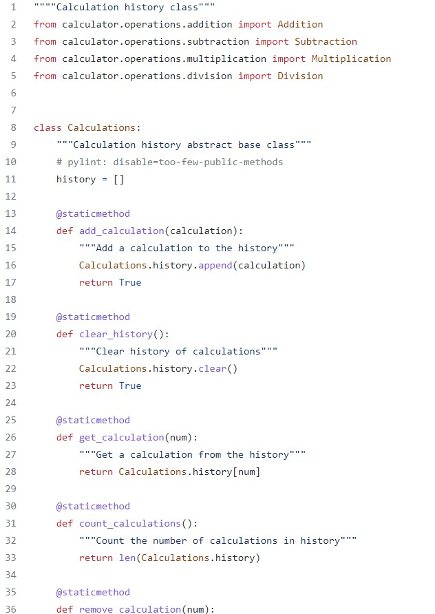
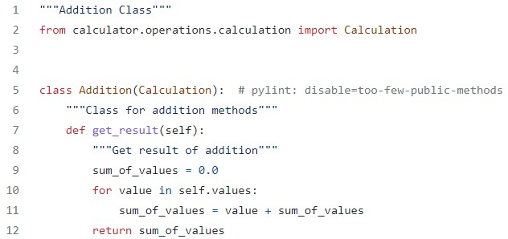
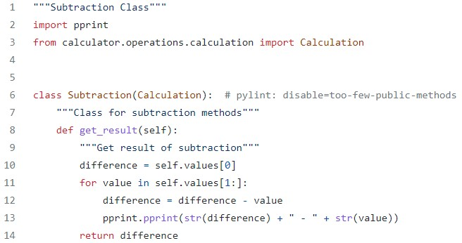

OOP Principles in Calculator program
OOP or object-oriented programming is a model of programming that designs software around the organization of objects and data rather than functions and logic. Our calculator program is written based on the 4 core OOP principles discussed below.
Encapsulation
Encapsulation is the idea that describes wrapping attributes and behavior into a class.
Objects are instances of a class. When an object is instantiated, it encapsulates its variables and functions from the class into a single unit.
Typically, variables in a class are set to private and can only be modified by public functions that can be used outside the class in order to avoid accidental change of the variables.
An example of encapsulation in our calculator program is in our calculations class:

Note: The full calculations class can be viewed here: https://github.com/tlr24/calc_project/blob/main/calculator/history/calculations.py (Full script not shown here).
In our example, we can see that we create a Calculations class on line 8. On line 11, we give our Calculations class a list variable names history to store our calcuation history.
We also define several methods including add_calculation() (line 14), clear_history() (line 20), get_calculation()(line 26), and remove_calculation() (line 36) that modify our history variable by appending, clearing, returning, and removing from it.
When a Calculations object is instantiated from the Calculations class, it acts as a single unit that encapsulates the history variable and all of its functions that can alter the history variable.
Inheritance
Inheritance is
2.
Polymorphism
Polymorphism is the ability to use a common interface for multiple forms of data types.
An example of polymorphism in our calculator program is in our operation scripts: addition.py, substraction.py, multiplication.py, division.py.
Let's first look at addition.py

Here we can see there the addition class inherits from the Calculation class. In the addition class, a method of get_result() is defined.
Now let's look at the subtraction.py

Here we see that there is a subtraction class defined that also inherits from the Calculation class. It also defines the same method called get_result(), however, it is getting the result for a different type of calculation: subtraction.
This is an example of polymorphism where we use the same interface for different objects to make the code more efficient.
Note: All of the operation classes can be viewed here: https://github.com/tlr24/calc_project/tree/main/calculator/operations.
Abstraction
Abstraction focuses on hiding the internal implementations of a process or method from the user.